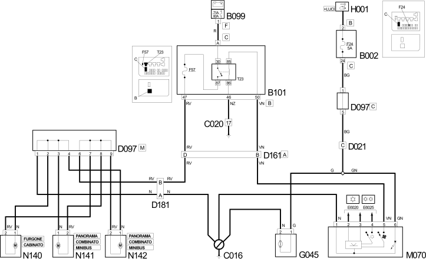

E6012 SUPPLEMENTARY HEATER WIRING DIAGRAM
- Path
- Electrical equipment > 1 ELECTRICAL FUNCTIONS > E60 CLIMATE CONTROL SYSTEM > E6012 SUPPLEMENTARY HEATER > E6012 SUPPLEMENTARY HEATER WIRING DIAGRAM
- Kind
- topic
- Applies to
- all engines; all production periods
- Interactive page
- https://sloeber94.github.io/elrnDB-fDct/en/#/244001975
Applies to: all engines; all production periods
Wiring Diagram

Components
Component code | Description | Reference to the assembly |
|---|---|---|
JUNCTION UNIT UNDER DASHBOARD | - | |
MAXI FUSE BOX ON BATTERY | - | |
OPTIONAL JUNCTION UNIT UNDER THE DASHBOARD | - | |
DASHBOARD/AIR CONDITIONING-HEATER COUPLING | - | |
SHORT CIRCUITING COUPLING | - | |
OPTIONAL DASHBOARD/AIR CONDITIONING COUPLING | - | |
HEATER/ADDITIONAL HEATER COUPLING | - | |
FRONT SUPPLEMENTARY HEATER | - | |
SECOND ROW SUPPLEMENTARY HEATER | - | |
THIRD ROW SUPPLEMENTARY HEATER | - | |
- |
Topics linked from this page (10)
- B002 JUNCTION UNIT UNDER DASHBOARD
- B099 MAXI FUSE BOX ON BATTERY
- B101 OPTIONAL JUNCTION UNIT UNDER THE DASHBOARD
- D021 DASHBOARD/AIR CONDITIONING-HEATER COUPLING
- D097 SHORT CIRCUITING COUPLING
- D161 OPTIONAL DASHBOARD/AIR CONDITIONING COUPLING
- D181 HEATER/ADDITIONAL HEATER COUPLING
- N140 FRONT SUPPLEMENTARY HEATER
- N141 SECOND ROW SUPPLEMENTARY HEATER
- N142 THIRD ROW SUPPLEMENTARY HEATER